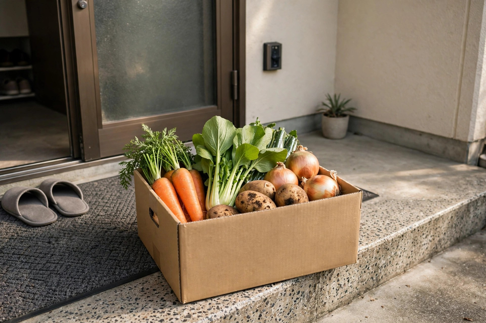

食材宅配は「箱」が単位で、冷凍弁当とは物差しが違う

食材宅配の料金は1食ではなく、野菜箱1回の価格が単位です。1回2,217円から5,297円の幅があり、送料と手数料、年会費の出方がサービスごとに違います。冷凍弁当の表とは分け、年間の総額で並べます。
箱の価格と手数料の出方
| サービス | 箱1回の価格 | 送料・手数料 | 年会費 | 配送 |
|---|---|---|---|---|
| らでぃっしゅぼーや | 箱の価格帯 2,217〜5,297円 | 注文額で変わる階段型 | 1,100円 | 週1回が基本 |
| 坂ノ途中 | 箱の価格帯は公式で確認 | 注文額で変わる階段型 | なし | 隔週も選べる |
| Oisix（野菜箱） | コースにより変動 | 注文額で変わる階段型 | なし | 週1回が基本 |
| 生協（コープデリ／パルシステム） | 注文した分だけ | 週手数料型（注文のない週も基本手数料が出る場合あり） | 出資金の仕組みあり | エリア限定（1都7県／12都県） |
生協は、配達エリアが限られることと、手数料が週単位で出る仕組みが一般の宅配と違うため、違いを明記した上でこの記事の比較対象に入れています。冷凍弁当の単価の表には入れていません。
編集部の見方
食材宅配は献立決定をゼロにはしません。減るのは買い物の回数と、届いた野菜の使い切り方を考える範囲です。冷凍弁当やミールキットとは、肩代わりする場所が違います。年会費と手数料は1回あたりでは小さく見えるため、年間の総額で見る形が合います。
申し込み先
PR・広告
らでぃっしゅぼーや おためしセット
初回価格は公式ページで確認 （2026年11月26日確認）
野菜箱の量と届き方を1回で見るための入口です。年会費1,100円は定期を続ける場合の費用として、上の表の総額に含めて見てください。
編集部の見方：箱の量が家庭の消費ペースに合うかどうかが続く分かれ目で、おためしはその確認に向いています。
らでぃっしゅぼーや公式サイトでおためしの内容を見る
出典：らでぃっしゅぼーや公式サイト、坂ノ途中公式サイト、Oisix 公式サイト、コープデリ公式サイト、パルシステム公式サイト（いずれも2026年11月26日確認）。この記事には広告（PR）が含まれます。提携の有無で並び順や記録の内容は変えていません。